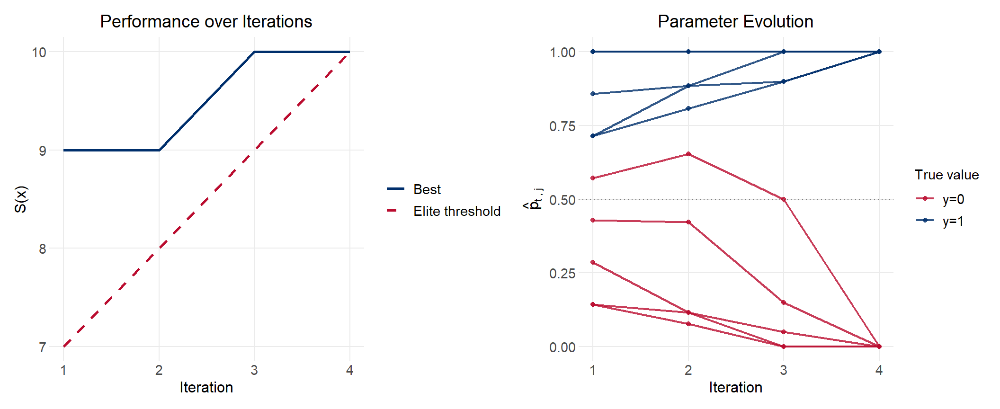
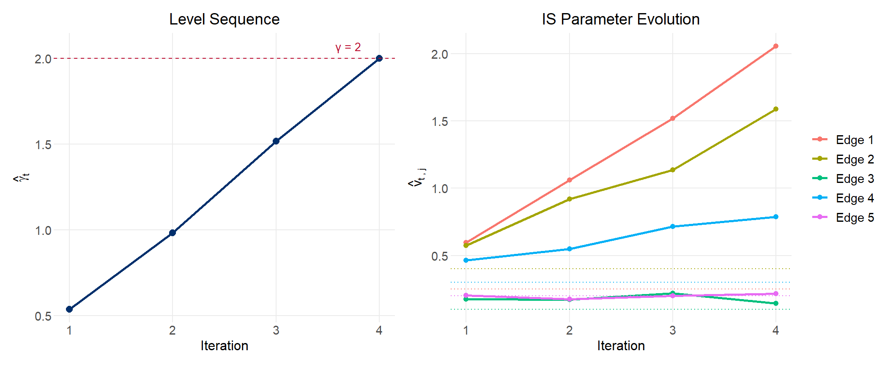

The cross-entropy (CE) method is a general-purpose algorithm for two related problems: estimating the probability of rare events in complex stochastic systems, and solving difficult combinatorial and continuous optimization problems. Originally proposed by Rubinstein (1997, 1999), it was consolidated and named in the tutorial by De Boer, Kroese, Mannor and Rubinstein (2005), which this document follows.
The method’s appeal is its simplicity. Each iteration consists of just two steps:
Generate a random sample of candidate solutions (or trajectories) from a parameterized probability distribution.
Update the distribution’s parameters so that the next sample is more likely to produce high-performing solutions.
The mathematical precision that distinguishes CE from ad hoc heuristics is in step 2: the update rule is derived by minimizing the Kullback-Leibler divergence (cross-entropy) between the current sampling distribution and the theoretically optimal one. This yields closed-form update formulas for distributions in the natural exponential family.
The CE method has been applied to the travelling salesman problem, buffer allocation, network reliability, DNA sequence alignment, reinforcement learning, and structural estimation in economics. Applications in economic modeling include estimating structural parameters where the likelihood surface is multimodal or the objective function requires simulation.
The CE Framework
Setup
Let \(X = (X_1, \ldots, X_n)\) be a random vector taking values in a space \(\mathcal{X}\), and let \(\{f(\cdot; \mathbf{v})\}\) be a parametric family of probability distributions over \(\mathcal{X}\). Let \(S : \mathcal{X} \to \mathbb{R}\) be a performance function. We seek either:
(Rare event) The probability \(\ell = P_\mathbf{u}(S(X) \geq \gamma)\) under a nominal parameter \(\mathbf{u}\), where \(\ell\) is very small.
(Optimization) The maximum of \(S(x)\) over \(x \in \mathcal{X}\).
The Kullback-Leibler divergence
The KL divergence (cross-entropy) between two densities \(g\) and \(h\) is:
Under \(g^*\), the IS estimator has zero variance. The catch is that \(g^*\) depends on the unknown \(\ell\). The CE method sidesteps this by finding the member of the parametric family \(\{f(\cdot; \mathbf{v})\}\) that minimizes \(D(g^*, f(\cdot; \mathbf{v}))\). This is equivalent to solving:
The CE update has a striking interpretation: \(\hat{\mathbf{v}}_t\) is the maximum likelihood estimate of \(\mathbf{v}\) based only on those samples in the current generation whose performance exceeds the elite threshold \(\hat{\gamma}_t\). The elite samples act as a “labeled dataset” from which MLE is computed at each iteration.
The two-phase iterative structure
When \(\ell\) is very small, generating elite samples under the nominal \(\mathbf{u}\) is difficult. The CE method resolves this with a multi-level scheme: it constructs a sequence of thresholds \(\hat{\gamma}_1 < \hat{\gamma}_2 < \cdots < \gamma\) and corresponding distributions \(f(\cdot; \hat{\mathbf{v}}_1), f(\cdot; \hat{\mathbf{v}}_2), \ldots\) that gradually shift probability mass toward the rare event (or optimal solution).
Each iteration:
Update the level\(\hat{\gamma}_t\): the \((1-\rho)\)-quantile of performances under \(f(\cdot; \hat{\mathbf{v}}_{t-1})\), capped at \(\gamma\).
Update the parameter\(\hat{\mathbf{v}}_t\): the MLE of \(\mathbf{v}\) restricted to the elite samples, reweighted by the likelihood ratio \(W(X_i; \mathbf{u}, \hat{\mathbf{v}}_{t-1}) = f(X_i; \mathbf{u}) / f(X_i; \hat{\mathbf{v}}_{t-1})\).
For optimization, the same structure applies but without the likelihood ratio (since there is no fixed nominal parameter \(\mathbf{u}\) to estimate against).
Example 1: Combinatorial Optimization — Binary Decoding
Problem setup
The simplest CE optimization example is binary vector decoding. A hidden vector \(\mathbf{y} = (y_1, \ldots, y_n) \in \{0, 1\}^n\) is unknown. An oracle returns:
\[S(\mathbf{x}) = n - \sum_{j=1}^n |x_j - y_j|\]
the number of matches between a candidate \(\mathbf{x}\) and the hidden \(\mathbf{y}\). The goal is to find \(\mathbf{y}\) by maximizing \(S\) over \(\{0,1\}^n\).
We parameterize the search distribution as independent Bernoullis: \(X \sim \text{Ber}(\mathbf{p})\), where \(\mathbf{p} = (p_1, \ldots, p_n)\). The CE update formula (derived from MLE over elite samples) is:
# Convergence of gamma and best scorep1 <-ggplot(res$hist_df, aes(x = iter)) +geom_line(aes(y = best, color ="Best"), linewidth =0.9) +geom_line(aes(y = gamma, color ="Elite threshold"), linewidth =0.9, linetype ="dashed") +scale_color_manual(values =c("Best"="#002F6C", "Elite threshold"="#BA0C2F")) +labs(title ="Performance over Iterations",x ="Iteration", y ="S(x)", color =NULL) +scale_x_continuous(breaks =1:res$n_iter)# Evolution of p_j over iterationsp_mat <-do.call(rbind, lapply(res$p_history, unlist))p_long <-as_tibble(p_mat, .name_repair ="unique") |>setNames(paste0("j=", seq_len(n))) |>mutate(iter =seq_len(res$n_iter)) |>pivot_longer(-iter, names_to ="component", values_to ="p_val") |>mutate(j =as.integer(str_extract(component, "\\d+")),true_y = y[j],y_lab =if_else(true_y ==1, "y=1", "y=0") )p2 <-ggplot(p_long, aes(x = iter, y = p_val, group = component, color = y_lab)) +geom_line(linewidth =0.8, alpha =0.8) +geom_point(size =1.5, alpha =0.8) +geom_hline(yintercept =0.5, linetype ="dotted", color ="gray50") +scale_color_manual(values =c("y=1"="#002F6C", "y=0"="#BA0C2F")) +scale_x_continuous(breaks =1:res$n_iter) +labs(title ="Parameter Evolution",x ="Iteration", y =expression(hat(p)[t~","~j]),color ="True value")p1 + p2

Figure 1: Left: elite threshold and best performance by iteration. Right: evolution of each Bernoulli parameter — values converge toward the hidden vector (dashed line at 0.5).
The convergence table from De Boer et al. (2005) reports:
The elite fraction update is a form of natural gradient ascent in the space of Bernoulli distributions. Each iteration concentrates probability mass on regions of \(\{0,1\}^n\) that produced high performance, progressively squeezing the distribution toward the optimum.
Example 2: Rare Event Simulation
Problem setup
Consider the weighted graph in ?@fig-graph, with five independent exponential edge weights \(X_1, \ldots, X_5\) with means \(\mathbf{u} = (0.25, 0.4, 0.1, 0.3, 0.2)\). Define \(S(X)\) as the length of the shortest path from \(A\) to \(B\). We wish to estimate:
\[\ell = P_\mathbf{u}(S(X) \geq \gamma)\]
for \(\gamma = 2\). Since the expected shortest path is well under 1, this is a rare event.
The graph has four nodes and three paths from \(A\) to \(B\):
De Boer et al. report an estimate of \(1.34 \times 10^{-5}\) with relative error 0.03 using \(N = 1{,}000\) and \(N_1 = 10^5\), matching our result closely.
Convergence of levels and parameters
Code
# Level convergencep1 <-ggplot(res_re$hist_df, aes(x = iter, y = gamma)) +geom_line(linewidth =0.9, color ="#002F6C") +geom_point(size =2.5, color ="#002F6C") +geom_hline(yintercept = gamma, linetype ="dashed", color ="#BA0C2F") +annotate("text", x = res_re$n_iter -0.3, y = gamma +0.07,label ="γ = 2", color ="#BA0C2F", size =3.5) +scale_x_continuous(breaks =1:res_re$n_iter) +labs(title ="Level Sequence",x ="Iteration", y =expression(hat(gamma)[t]))# IS parameter evolutionv_long <-as_tibble(res_re$v_seq, .name_repair ="unique") |>setNames(paste0("Edge ", 1:5)) |>mutate(iter =seq_len(res_re$n_iter)) |>pivot_longer(-iter, names_to ="edge", values_to ="v_val") |>mutate(nominal = u[as.integer(str_extract(edge, "\\d+"))])p2 <-ggplot(v_long, aes(x = iter, y = v_val, color = edge)) +geom_line(linewidth =0.9) +geom_point(size =1.8) +geom_hline(data =tibble(edge =paste0("Edge ", 1:5), nominal = u),aes(yintercept = nominal, color = edge),linetype ="dotted", linewidth =0.5 ) +scale_x_continuous(breaks =1:res_re$n_iter) +labs(title ="IS Parameter Evolution",x ="Iteration",y =expression(hat(v)[t~","~j]),color =NULL)p1 + p2

Figure 2: Left: the level sequence γ̂_t climbs from near-0 to γ = 2 over iterations. Right: the IS means v̂_t for each edge — edges 1 and 2 increase sharply (making both paths longer), while edge 3 (the bottleneck of the fast path) stays near its nominal value.
Interpreting the IS parameters
The CE method discovers that the most efficient way to simulate the rare event \(\{S(X) \geq 2\}\) is to heavily inflate the means of edges 1 and 2 — which appear in all three paths from \(A\) to \(B\) — while leaving edge 3 (the bottleneck of the fastest path) near its nominal value. Intuitively: once \(x_1\) is large, the shortest path is almost certainly large regardless of \(x_3\).
Example 3: The Max-Cut Problem
Problem setup
The max-cut problem is a canonical NP-hard combinatorial optimization problem. Given a weighted graph \(G = (V, E)\) with \(n\) nodes and non-negative edge weights \(c_{ij}\), partition the nodes into two subsets \(V_1, V_2\) to maximize the total weight of edges crossing the partition:
where \(x_i \in \{0, 1\}\) indicates which partition node \(i\) belongs to (by convention \(x_1 = 1\)).
CE for max-cut
We parameterize: \(X_2, \ldots, X_n \overset{\text{ind.}}{\sim} \text{Ber}(p_j)\), where \(p_j = P(X_j = 1)\) is the probability that node \(j\) is in the same partition as node 1. The update rule (Algorithm 2.3, De Boer et al.) is identical to the binary decoding case:
with \(\alpha \in [0.4, 0.9]\). Once a parameter reaches 0 or 1 without smoothing, it is “locked” permanently; smoothing gives the algorithm more flexibility to escape local optima.
R implementation
Code
ce_max_cut <-function(C, N =NULL, rho =0.1, alpha =0.9,d =5, max_iter =100, seed =NULL) {if (!is.null(seed)) set.seed(seed) n <-nrow(C)if (is.null(N)) N <-5* n# Cut cost: sum of C_ij over edges crossing the partition cut_cost <-function(x) { cross <-outer(x, x, "!=") # TRUE where different partitionssum(C * cross) /2# each edge counted twice } p <-rep(0.5, n -1) gamma_history <-numeric(max_iter) best_history <-numeric(max_iter)for (t inseq_len(max_iter)) {# Generate N cut vectors (node 1 always in partition 1) X2n <-sapply(p, function(pj) rbinom(N, 1, pj)) # N x (n-1) X <-cbind(1L, X2n) # N x n# Compute cut costs perf <-apply(X, 1, cut_cost)# Elite threshold gamma_t <-quantile(perf, 1- rho) gamma_history[t] <- gamma_t best_history[t] <-max(perf)# Smoothed parameter update from elite samples elite <- X2n[perf >= gamma_t, , drop =FALSE] p_new <-colMeans(elite) p <- alpha * p_new + (1- alpha) * p# Stopping: last d gamma values unchangedif (t >= d &&length(unique(round(gamma_history[(t-d+1):t], 6))) ==1) break } n_iter <- t x_final <-c(1L, as.integer(p >0.5))list(p = p,x_final = x_final,cut_cost =cut_cost(x_final),gamma_history = gamma_history[1:n_iter],best_history = best_history[1:n_iter],n_iter = n_iter )}
Small example: known optimal solution
We first apply CE to the 5-node graph from Example 3.1 of De Boer et al., whose cost matrix is known and whose optimal cut \(\mathbf{x}^* = (1, 1, 0, 0, 0)\) with \(\gamma^* = 28\) can be verified by enumeration.
For a larger test with a known optimal solution, we construct the synthetic max-cut problem from Section 3.2. With \(n\) nodes partitioned into two groups of size \(m\) and \(n-m\): - Within-group edges: drawn from \(U(0, 1)\) (small weights). - Between-group edges: constant \(c\) (large weight).
When \(c > b(n-m)/m\) (here \(b = 1\), \(c = 1\), \(m = n/2\)), the optimal cut is to separate the two groups, with \(\gamma^* = c \cdot m \cdot (n-m)\).
Figure 3: Convergence of the CE algorithm on the 50-node synthetic max-cut problem. The best solution found at each iteration (blue) and the elite threshold (red dashed) both climb toward the known optimum (black dotted).
Figure 4: The final CE partition on the 50-node graph. Nodes colored by assigned partition; between-group edges (gray, crossing the cut) carry the high-weight connections that define the optimal partition.
Parameter Guidance
The CE algorithm has four tunable parameters. De Boer et al. offer the following practical guidance, drawn from extensive numerical experiments.
Parameter
Meaning
Recommended value
\(N\)
Sample size per iteration
\(5n\) to \(10n\) for node problems (SNN); \(5n^2\) to \(10n^2\) for edge problems (SEN)
\(\rho\)
Elite fraction
0.01–0.1; use larger \(\rho\) when \(n < 100\)
\(\alpha\)
Smoothing parameter
0.4–0.9 for discrete problems; 1.0 (no smoothing) for continuous
\(d\)
Stopping patience
3–5 iterations without improvement
On sample size: The heuristic \(N = ck\) where \(k\) is the number of parameters to estimate (and \(c > 1\)) ensures enough samples to get a reliable MLE at each iteration. For the max-cut on \(n\) nodes, there are \(n-1\) Bernoulli parameters, so \(N = 5(n-1)\) is a natural choice.
On smoothing: For binary problems, once \(p_j\) reaches 0 or 1 it stays there, which can trap the algorithm in a suboptimal partition. Smoothing (\(\alpha < 1\)) keeps parameters from degenerating too quickly, effectively adding “momentum” toward past parameter values.
On the FACE algorithm: De Boer et al. also describe a fully adaptive modification (Algorithm 4.1) that adjusts the sample size \(N_t\) dynamically at each iteration, requiring only \(N_\text{elite}\) as input. It guarantees that the best elite performance improves at each iteration and flags “hard” problems where this cannot be achieved within the budget.
Summary
The cross-entropy method reduces two hard problems — rare event estimation and combinatorial optimization — to the same iterative structure: generate elite samples, then fit a distribution to them by MLE.
Problem type
Distribution
Update formula
LR term?
Rare event estimation
Exponential (or any NEF)
Weighted mean (eq. 24)
Yes
Binary optimization
Bernoulli
Elite fraction (eq. 8/36)
No
Max-cut
Bernoulli
Elite fraction (eq. 39)
No
TSP
Markov transition matrix
Elite transition counts (eq. 49)
No
The absence of the likelihood ratio in optimization problems (Remark 2.4) is a subtle but important point: in rare event simulation, the nominal \(\mathbf{u}\) is fixed throughout, so \(W\) corrects for the drift away from \(\mathbf{u}\). In optimization, the reference distribution is redefined at every iteration, so no correction is needed.
Connection to economic modeling
The CE method is increasingly used in structural economics for problems where the objective function (e.g., a simulated method-of-moments criterion or simulated likelihood) is noisy, non-differentiable, or multimodal. In these settings, gradient-free methods that explore the parameter space stochastically — like CE — are often more reliable than gradient-based optimizers. The CE method’s grounding in information theory and its provable convergence properties give it theoretical standing beyond purely heuristic approaches such as simulated annealing or genetic algorithms.
Reference
De Boer, P.-T., Kroese, D.P., Mannor, S., & Rubinstein, R.Y. (2005). A tutorial on the cross-entropy method. Annals of Operations Research, 134, 19–67.